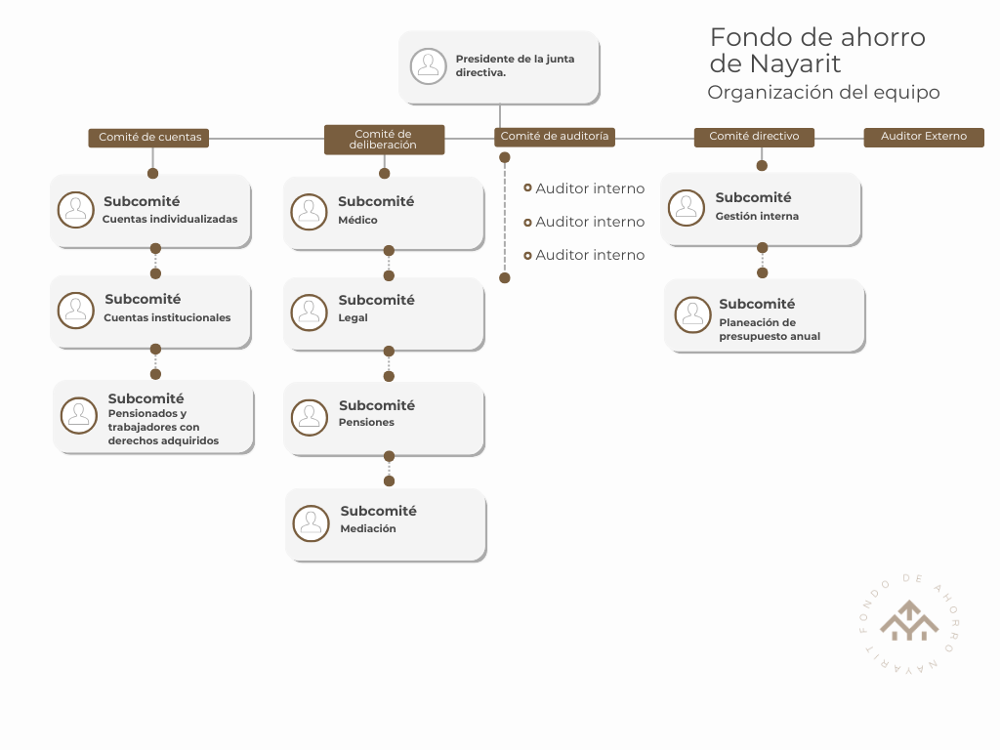

Nosotros
El Fondo de Ahorro Nayarit (FAN) es una institución financiera, independiente del gobierno estatal, que administra las cuentas individuales de ahorro para el retiro de los trabajadores afiliados, para garantizarles un retiro digno y con bienestar. El FAN emplea la plataforma financiera de Afore XXI Banorte, lo cual garantiza que las cuentas de sus afiliados estén seguras y den rendimientos. Además, su operación es vigilada por la Comisión Nacional de Ahorro para el Retiro (CONSAR), en apego a la Ley del SAR.
Misión
Administrar eficientemente el ahorro que hacen las y los trabajadores del estado de Nayarit para su retiro, asegurándose de que dichos recursos están adecuadamente invertidos, a fin de que las y los beneficiarios dispongan de fondos suficientes para gozar de un retiro con bienestar pleno.
Visión
Convertir al FAN en una entidad económicamente viable, que contribuya a la sostenibilidad financiera de Nayarit y que permita a las y los trabajadores de los sectores público y privado del estado gozar de un retiro digno, garantizando la administración transparente y eficaz de sus ahorros.
Organigrama
